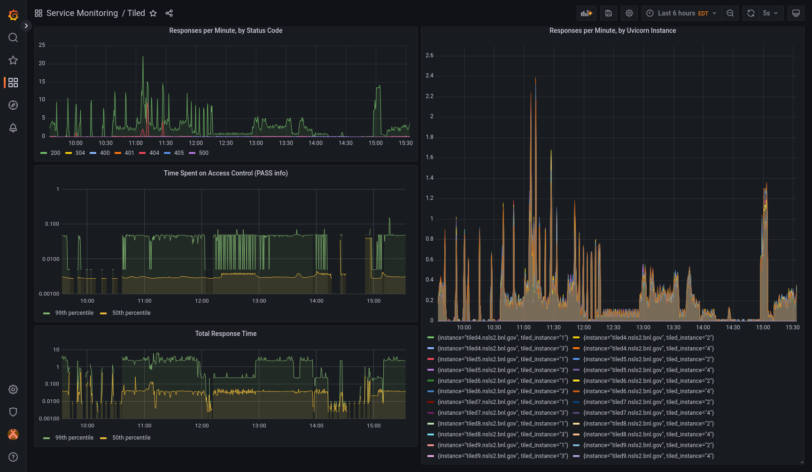

Prometheus Metrics#
Tiled publishes Prometheus metrics that can be used to monitor many aspects of its usage and performance over time. The metrics can be visualized in dashboards using, for example, Grafana.

Tiled ships with some example configuration to make it easy to try this.
Install Podman (recommended) or Docker (also works).
Install
podman-composeordocker-compose. Either can be installed usingpip install.Run
TILED_SINGLE_USER_API_KEY=secret podman-compose up.Open Grafana by navigating a web browser to http://localhost:3000/d/Hnvd_TA4z/tiled-dashboard.
The dashboard will be blank at first. To generate some activity, use the Tiled Python client.
Authenticate using the dummy API key, secret.
from tiled.client import from_uri
c = from_uri("http://localhost:8000", api_key="secret")
list(c)
To clean up, escape podman-compose using Ctrl+C, and then run podman-compose down. This must be run before running podman-compose up again. (Ditto for
docker-compose.)
Warning
Security Notes
This example configuration disables authentication in Grafana so that no login is required to view or edit the dashboard. Do not use it “in production”, or anyone will be able to view (or vandalize) your dashboard.
Also, the example Prometheus configuration in
monitoring_example/prometheus/prometheus.yml contains a dummy credential
(secret). To run the example, it must match the secret set by
TILED_SINGLE_USER_API_KEY.
In real single-user deployments, the secret should be set to a secure value as described in
Tiled’s security documentation.
In multi-user deployments, an
API key with the
metrics scope should be used.
How does it work?#
Tiled securely exposes an endpoint
/api/v1/metricswith live metrics describing the activity and performance of the Tiled server.Prometheus polls this endpoints and stores the results in its database, accumulating a history.
Grafana queries Prometheus for various metrics derived from this, which it then displays in dashboard.